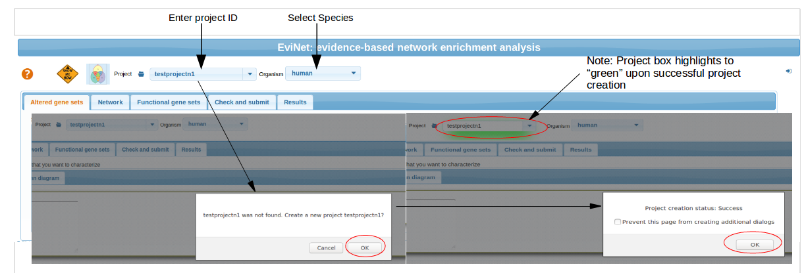
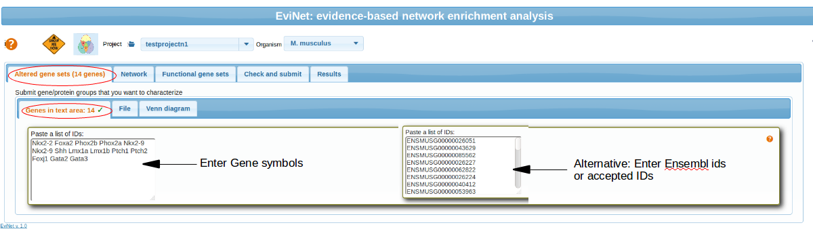
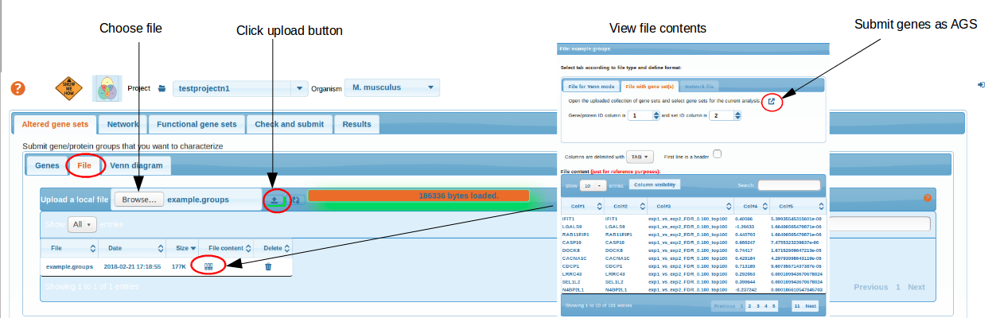
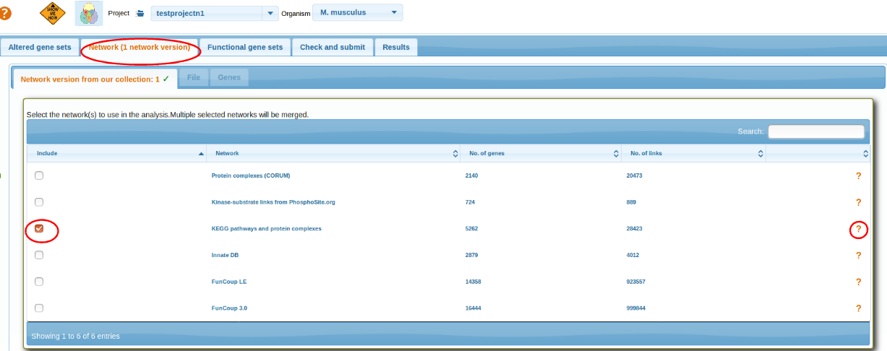
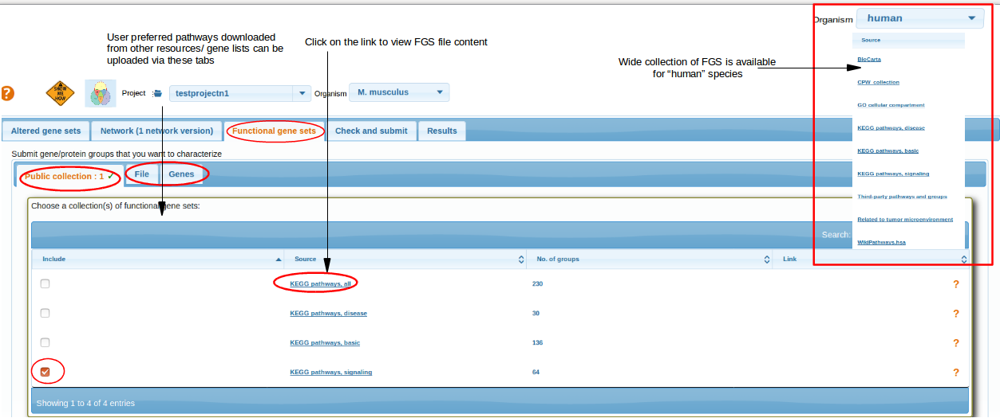
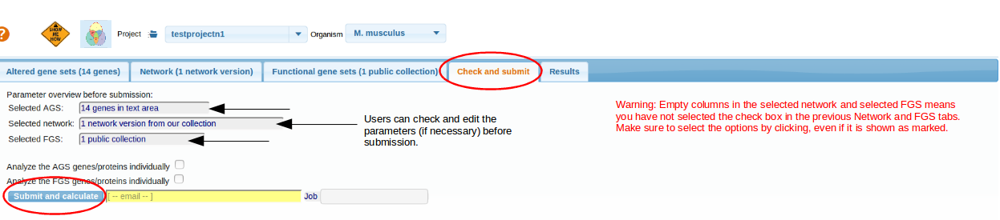
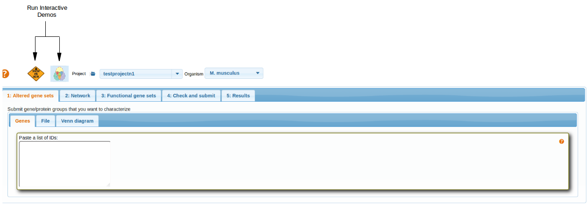
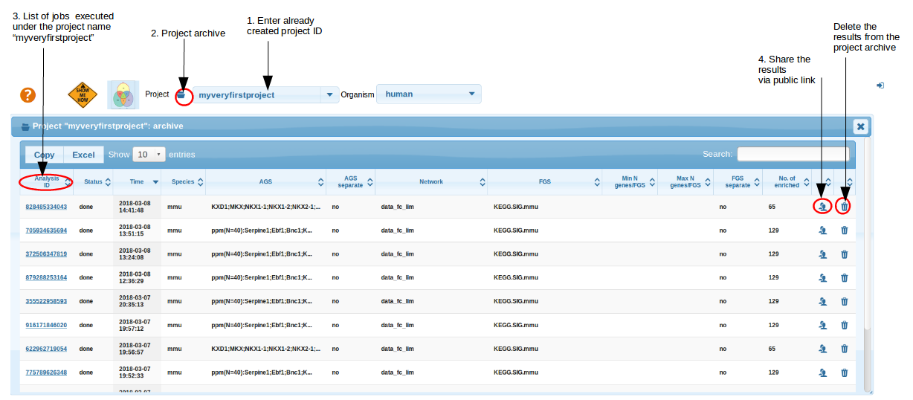

Setting up the first analysis
This page introduces you to the various tabs in Evinet and let you get familiar with various tabs and its functionalities available inside EviNet.
- Begin with the project ID and species selection
- Altered Gene sets
- Selecting Network
- Selecting Functional genesets
- Check and Submit
- Interactive Demos
- Project Archive
Begin with the project ID and species selection
ALWAYS start from setting your project ID and the organism. Otherwise your analysis might use irrelevant data.
Project names should be unique and should not contain any special characters (!@#$%^&*'"()[]/\|{}_) or empty spaces. A project name cannot start with a digit.

Altered Gene sets
The whole aim of network enrichment analysis (Alexeyenko et al., 2012) is characterization of certain genes or gene lists.
Hence continue by submitting your altered gene sets (AGS) by either directly pasting gene symbols or by uploading a file with pre-compiled AGS(s) (see below). Finally, the most advanced, dynamic mode of AGS formation is provided via Venn diagrams: see here.
Note: uploaded files and text box input accepts any of the following gene/protein IDs:
Human, mouse, rat:
Gene symbol (HUGO/MGI),
ENSEMBL gene and protein ID,
Swiss-Prot accession number,
Swiss-Prot ID,
TREMBL accession number
A. thaliana:
Symbol,
Locus name
These ids will be converted to Gene symbols and analyzed against functional gene sets and networks, which are also stored in this format.
Paste gene symbols
Paste your list of gene symbols (or list of other accepted IDs) in the text box. Examples:Nkx2-2/NKX2-2 Foxa2/FOXA2 Phox2b Phox2a Nkx2-9 Shh PTCH1/Ptch1.

Upload a file
Once uploaded, a file might remain in your project space
to be re-analyzed later. NOTE: the file should contain at least two columns and you have to specify column roles and the column delimiter. An advantage of using files is that they might contain multiple AGSs (the AGS IDs should then appear in a special column).

top
Selecting Network
Select a network. More detailed networks (FunCoup, STRING) are larger but less precise. Networks from curated resources like KEGG, CORUM, PhosphoSite are confident but much less comprehensive and hence might miss novel genes. A network can also be uploaded by the user as a text file and then chosen for the analysis via respective tab File or Genes. The user interfaces are identical to AGS and FGS (see below and above).

top
Selecting Functional genesets
Select a collection of functional gene sets, i.e. pathways or GO terms. They should be as close to your angle of view as possible.. In most specific and important cases consider submitting your own pathway as a gene list via the tabs File or Genes. Currently for mouse, rat and A.thaliana, we have limited FGS collections from KEGG pathways. For human, wide collection of FGS were collected from various resources. By clicking on the FGS source link, users can view the file contents and these files are downloadable.

top
Check and Submit
Check if the three components of the analysis correctly appear at the "Check and submit" tab. NOTE:For editing, there is an option "change" if you mouse over on the respective textbox.
Finally , click the button Submit and calculate
. It might take time to get the job finished, thus we recommend starting from smaller networks (< 10000 links) and smaller FGS/AGS collections. NOTE: options Analyze ...individually
can alter the output only if you tick the checkbox
. .

top
Interactive Demos
Interactive demo buttons helps to go through the various tabs and gives an idea, how to run the EviNet and generate results.

top
Project Archive
Within the project ID, all executed jobs are stored in "Project Archive" folder . This helps you to retrieve your analysis anytime later and share your results with collaborators. Note that you always have to set the same ID in the project box and press Enter. However, Archive does not allow you to re-calculate the results. In order to do that, you would need to look up the parameters from the respective Archive line (AGS, FGS, network etc.), set them manually and press "Check and submit" again.

top